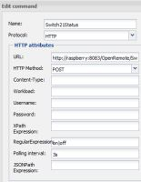
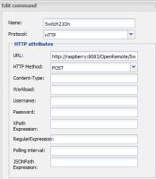

The Razberry now has http.request() to push data using HTTP requests. In order to get rid of continuous inefficient polling at the OpenRemote side, this could be a solution. So I read the REST API docs again. I did notice that the "Send Write command" can do a couple of things:
Switch: ON/OFF
Slider: some integer or float, e.g. 27
Button: click
Gesture: swipe
Unfortunately no Status update in that list. Is that correct? If so why wasn't that considered?
If not what am I overlooking?
PS: At the moment sockets are not yet supported in Razberry, but they may come in a couple of months.
{kind=link}
{kind=link}
|
bump |
|
This is used by the console to send an action to the controller. Maybe if you use a virtual command and rules to take the received command to update a sensor this could be a workaround. |
|
Thanks Marcus. Thought about that myself, but I'm not to fond of Drools anymore. |
|
The first draft of the REST API stated as it goal:
So in the intention it is definitely not constrained to consoles. So I dug a bit deeper into this. So following the REST instructions I made a command instruction for the status sensor. In the controller.xml file I did find the the necessary command_id for my specific sensor command. As this command afaik does not have any parameters I added null http://192.168.1.33:8688/controller/rest/control/2539/null
It is clumsy, I know. But it is for the principle to see if and how I could send a sensor update command using the standard functions of OpenRemote. With Firefox the URL returns <openremote xsi:schemaLocation="http://www.openremote.org http://www.openremote.org/schemas/controller.xsd">
<error>
<code>200</code>
<message>SUCCESS</message>
</error>
</openremote>
Unfortunately I do not see in the logs that a status call has been made. |
|
You cannot modify a sensor through the rest api. |
|
How is this restricted then to a console? Must it identify itself to the controller to let this happen? The REST aPI documentation says nothing about that. My intention is to Send Write Command using the syntax /rest/control/{control_id}/{command_param}
I expected I could turn a switch on from a piece of code that sends the following URL http://192.168.1.33:8688/controller/rest/control/2541/ON
But that apparantly should not work? |
|
You are right that it is not restricted to a console. You can just call the URL from a browser and the light turns on. |
That is what I initially tried to achieve. Do a Send Write Command to the status command I defined for this particular switch. (My ultimate goal is to work around polling from within OR. At every "value change"event on the RaZberry side, RaZberry should call this OR status command, which in turn asks RaZberry to send the value.) |
|
I know your goal but it is not possible unless you create your own protocol and implement this in Java. |
|
 So in conclusion, a (http) command connected to a switch can be activated with a REST send write, but the almost identical command connected to a sensor, can not. |
|
You can call it but the one connected to the sensor will not update the sensor value. It will execute the HTTP call but the result is not evaluated. |
|
Thanks this helps. So my problem is in the HttpGetCommand, and not in the REST API part? |
|
Looking at the source of the "stuff" happening when calling the REST URL, a modified HttpGetCommand will not work. |
|
Marcus, thank you for taking the time to look into this. |
|
The required functionality was implemented with UDPListener and a rule. It is described in one of the HowTo's |
{kind=link}
{kind=link}